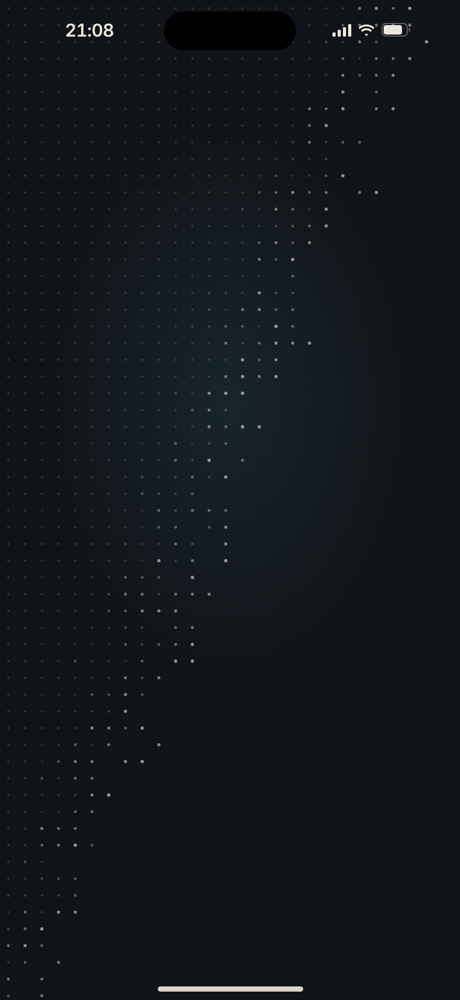
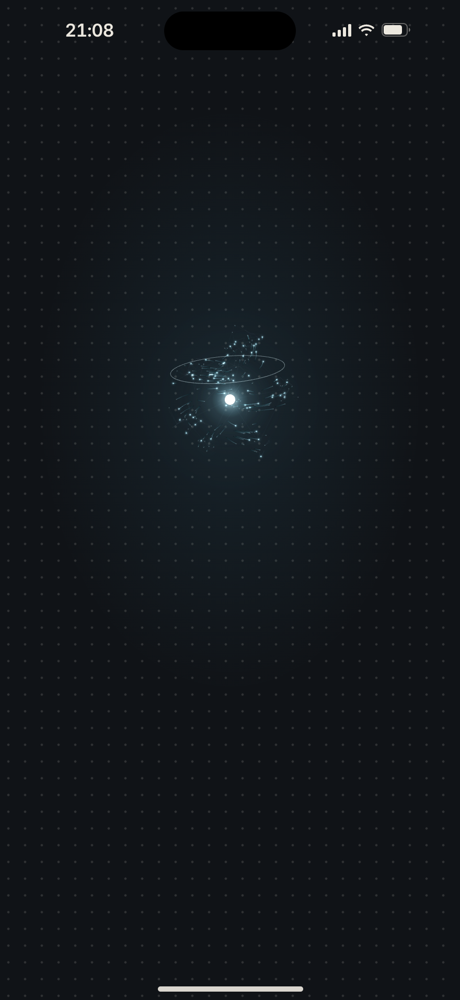
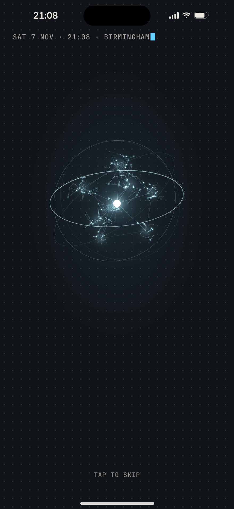
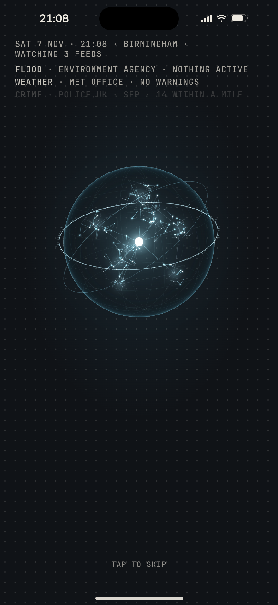
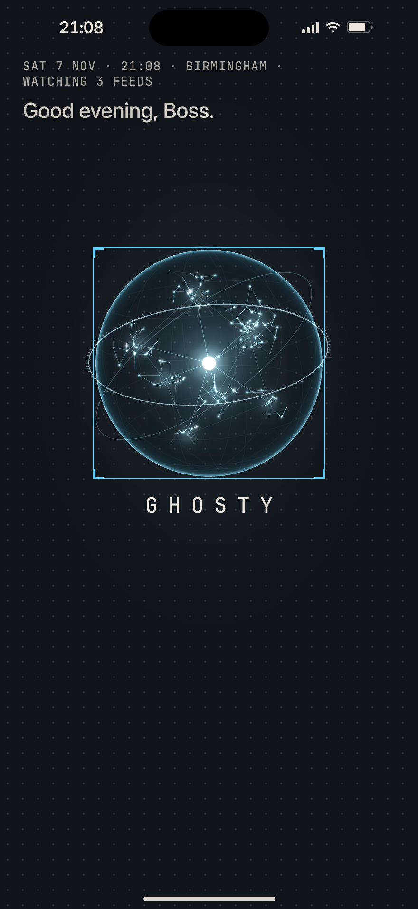
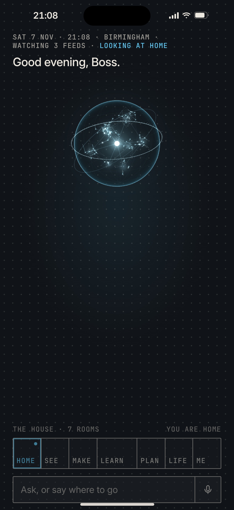
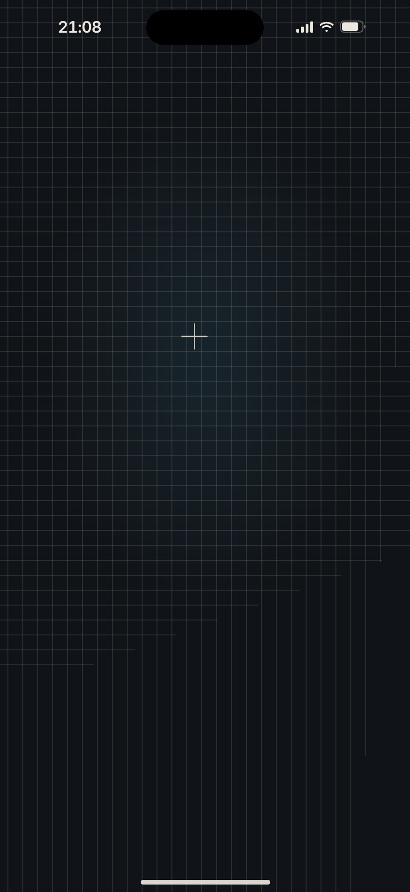
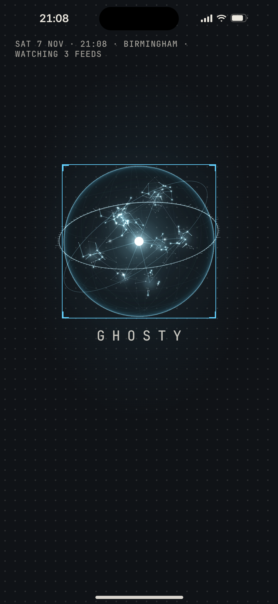

Reactor · Graphite · The Scan, 440 × 956. The ground, the floor forming, the orb forming from his library’s points, the stamp line typing itself, the feeds answering, the recognition, the greeting, then Home: 2.88 s to a usable Home (the HUD settled at 3.29 s). A tap skips to Home at any moment. Every line on it is true of that moment; the README says where each truth comes from.
0 ms1.0 s2.0 sHOME 2.88 s
Shot 1 · 160 ms
The ground
The ground, nothing else, one breath: the room’s light breathing in where the orb will be.

Shot 2 · 420 ms
The floor forms
The Scan’s field of points sampled in from the top-left corner, the sampling front a little brighter.

Shot 3 · 900 ms
The orb forms
His library’s points drift out of the point of light and gather into the constellation, each leaving a short trail; the sweep passes down through them and refracts at the equator; the camera pushes in.

Shot 4 · 1.56 s
The stamp line
The sphere has resolved: the haze, the meridians one after another, the rim last. At the top the stamp line types itself in mono with a block cursor.

Shot 5 · 2.06 s
The feeds answer
One truth line each as they connect, 160 ms apart; the stamp’s last segment turns to WATCHING 3 FEEDS when the third has answered.
Shot 6 · 2.44 s
The recognition
The reticle snaps onto the orb from 14 px wider, closing on it over the lock’s 160 ms in the accent, with one short tone; G H O S T Y under it. The feeds’ lines have gone: the stamp holds their truth.

Shot 7 · 2.6 s
The greeting
His line under the stamp, where Home’s first line lives; the box and the name still on the orb.

Shot 8 · 3.06 s
Home
The orb eases up into Home’s hero (the same Mind, never a copy); the box and the name have gone; the HUD slides up a beat after it lands.
The world and the ground in it: The Map’s floor forming, and Paper, which boots on the night ground.

The Map · 520 ms
The Map · the floor forms
The plotting grid drawn line by line (the verticals from the left, then the horizontals from the top), the small crosshairs every five squares, and the one crosshair finding centre where the orb will form.

Paper · 2.44 s
Paper · the recognition, on the night ground
The same recognition under Paper: the boot plays on his night ground (Graphite by default), in his colour, and Home lands on it too.